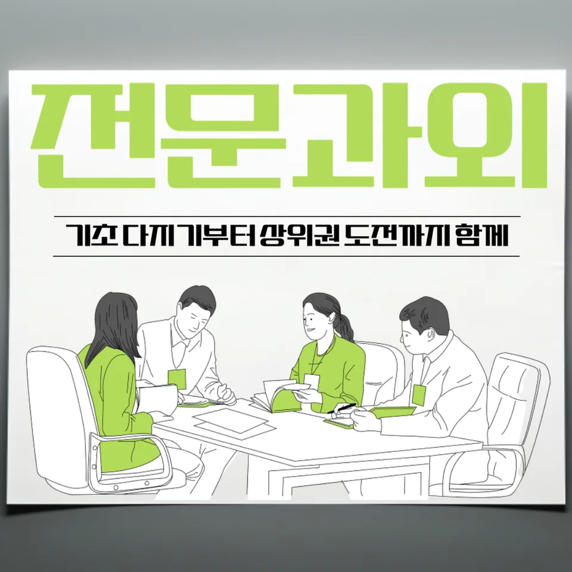

PageType : SUBJECT
URL : /경기도과외/의정부시과외/낙양동과외/낙양동수학과외/
지역 교육환경이 수학 학습에 미치는 영향
낙양동수학과외를 찾는 학생들은 지역 학원가 분위기와 학교 수업의 속도를 같이 체감하는 경우가 많습니다. 같은 단원이라도 학교에서 강조하는 개념의 범위가 다르고, 시험 직전에는 문제 유형을 다르게 묶어 대비하는 편이라 학습 리듬이 흔들리기 쉽습니다. 특히 낙양동수학과외 수업을 시작하면, 학생이 지금까지 쌓아온 이해의 빈틈이 “어느 단원에서부터” 누적됐는지부터 정리하게 됩니다.
학습 분위기가 비교적 분주한 지역에서는 성취를 빠르게 따라잡으려는 압박이 커집니다. 낙양동수학과외 학생들은 과제량이 늘어날 때 개념 학습과 연습의 균형이 깨지는 순간을 자주 겪습니다. 이때 중요한 변화는 계산이 늘었다는 사실보다, 낯선 문항을 보았을 때 스스로 어떤 개념을 떠올리는지 관찰하는 데서 시작됩니다. 학교에서 진도를 빠르게 나가도 학습이 끊기지 않으려면 수업 뒤 정리 시간과 짧은 복습이 함께 설계되어야 합니다.
또한 낙양동수학과외에서는 가정에서의 공부 시간이 일정한지, 아니면 시험 주간에 집중되는지 확인합니다. 지역 특성상 시험 전 집중형 패턴이 나타나면, 학생은 수학을 “마감에 맞추는 과목”으로 경험하기 쉬워지고, 그 결과 내신과 수행평가 준비 사이의 연결이 약해질 수 있습니다. 낙양동수학과외는 이런 연결을 다시 이어, 개념-연습-오답 정리-복습으로 이어지는 흐름을 학생의 생활 방식에 맞춰 정착시키는 쪽에 초점을 둡니다.
학교별 평가 방식과 학습 방향
학교마다 수학의 평가가 도착하는 방식이 다릅니다. 어떤 학교는 서술형과 과정 평가 비중이 비교적 높아 보이고, 또 다른 학교는 객관식 비중이 커서 반응 속도와 선택 판단이 영향을 주기도 합니다. 낙양동수학과외는 학생이 “점수 산출 방식”을 이해하도록 돕는 과정에 시간을 씁니다. 즉, 정답을 맞히는 연습만 반복하기보다, 학교가 요구하는 과정 기록과 풀이 흐름이 실제로 어떻게 채점으로 이어지는지 파악합니다.
수행평가가 있는 시기에는 자료 해석, 개념 적용, 설명 문장 구성 같은 요소가 함께 등장합니다. 낙양동수학과외에서는 그 준비가 수업 내용을 벗어나지 않도록, 수업 중 이해한 개념을 다음 단계의 문항으로 확장시키는 연습을 합니다. 이 과정에서 학생은 “왜 이 방법을 쓰는가”를 말로 풀어보는 경험을 하게 되며, 단순 암기에서 활용 학습으로 전환됩니다.
학생들이 수학을 어려워하는 주요 원인
낙양동수학과외 학생들이 가장 먼저 맞닥뜨리는 어려움은 개념이 부족해서가 아니라, 개념이 필요한 순간에 꺼내지 못하는 경우입니다. 학교 수업에서는 이해가 된 것처럼 보였어도, 시간이 지나면 비슷한 문제에서만 작동하고 낯선 형태로 바뀌면 멈추는 일이 생깁니다. 이때 학생의 멈춤 지점은 대개 계산 실수가 아니라 “어떤 단서로 출발했는지”의 부재에 있습니다.
학습 중 가장 흔한 패턴은 문제를 많이 풀었다고 생각하지만 오답을 깊게 보지 않는 흐름입니다. 낙양동수학과외에서는 오답을 단순 재풀이가 아니라 원인 분류로 다루게 합니다. 실수형, 개념혼동형, 문제해석형으로 나눠보면 학생은 같은 틀림을 반복하는 시간을 줄일 수 있습니다. 낙양동수학과외가 강조하는 변화는 틀린 문제에서 배운 뒤에 “다음 연습에서 같은 실수가 나오지 않게” 행동을 바꾸는 것입니다.
학년 변화에 따른 수학 학습의 차이
학년이 올라가면 부담은 단순히 어려운 문제의 증가로만 오지 않습니다. 낙양동수학과외를 진행해보면, 학년 전환 시점에 학생의 학습 습관이 함께 흔들리는 경향이 두드러집니다. 중간고사와 기말고사가 더 촘촘해지며, 학교 수업의 속도와 누적 범위가 늘어 “복습을 해두면 편해지는 구조”가 명확해집니다. 그런데 많은 학생은 그 구조를 뒤늦게 인식해 시험 전에만 몰아서 이해하려고 합니다.
상위 학년으로 갈수록 사고력 요구가 커져 문제 해결 과정이 길어집니다. 낙양동수학과외에서는 학생이 한 문제 안에서 여러 개념을 연결하는 경험을 반복하도록 돕습니다. 이때 학생은 문제를 빨리 푸는 법보다, 풀기 전에 해야 할 관찰과 선택을 배우며 점차 문제를 “순서대로 생각하는 훈련”으로 바꿉니다.
꾸준한 학습이 실력으로 이어지는 과정
수학 학습에서 꾸준함은 양이 아니라 리듬입니다. 낙양동수학과외는 매번 긴 시간을 확보하는 방식보다, 개념 확인-짧은 연습-복습 표시의 순환을 생활로 정착시키는 쪽을 중시합니다. 학생이 자기주도학습으로 넘어갈 때 가장 중요한 변화는 “오늘 무엇을 끝내야 하는지”를 스스로 정의하는 능력이 생기는 데서 나타납니다.
시험이 다가오면 학습 패턴이 바뀌기 쉽습니다. 낙양동수학과외에서는 그 변화를 무조건 멈추게 하기보다, 계획적인 공부습관 안에서 시험 기간의 우선순위를 조정하도록 합니다. 예를 들어 오답이 누적된 단원을 먼저 정리하고, 그다음에 학교 시험 범위에 맞춰 연습의 비중을 조정합니다. 이런 방식은 단기 성과에 흔들리기보다 장기 기억으로 이어지는 복습을 가능하게 합니다.
문제 해결력을 키우는 학습 습관
문제 해결은 공식 암기 이후에 자연스럽게 따라오는 결과가 아니라, 매 문항을 해석하는 습관에서 출발합니다. 낙양동수학과외에서는 학생이 문제를 볼 때 “무엇을 묻는지, 어떤 정보를 줬는지”를 먼저 정리하도록 훈련합니다. 이 과정이 반복되면 학생은 계산을 시작하기 전 단계에서 불안이 줄어들고, 실수도 줄어드는 경향이 생깁니다.
풀이가 막히면 학생은 정답 여부만 확인하고 다음 문제로 이동하기 쉽습니다. 대신 낙양동수학과외는 막힌 지점 주변의 생각을 끊어내어 다시 시작하게 합니다. 오답을 만들었던 선택이 왜 선택되었는지, 혹은 다른 길이 왜 어려웠는지를 설명하게 하면 사고력과 문제 해결 능력이 함께 자랍니다.
복습과 학습 관리가 중요한 이유
복습은 “다시 한 번”이 아니라 “다음에 써먹기 위한 재조립”입니다. 낙양동수학과외에서는 수업이 끝난 날의 정리, 며칠 뒤의 재확인, 시험 전 범위 점검처럼 복습 단계를 나눕니다. 학생이 개념을 이해했는지 확인하려면 같은 유형만 반복할 것이 아니라, 유사한 질문으로 개념이 작동하는지를 보아야 합니다.
학습 관리는 계획을 세우는 순간에 끝나지 않습니다. 낙양동수학과외에서는 주간 단위로 진도와 오답을 함께 체크해, 복습이 밀리지 않게 만듭니다. 학교의 내신은 범위가 누적되기 때문에, 수행평가 준비가 겹치는 시기에는 시간이 분산됩니다. 이때도 낙양동수학과외는 “지금 집중할 것”과 “나중에 돌아올 것”을 구분하는 방식으로 공부습관을 유지시키려 합니다.
수학 학습에서 확인해야 할 핵심 요소
낙양동수학과외에서 실제로 점검하는 핵심은 이해와 실력의 연결 고리입니다. 개념을 배웠는데도 문제가 풀리지 않는 학생은 대개 개념을 상황에 맞게 꺼내는 경험이 부족합니다. 반대로 문제를 풀긴 하지만 틀림이 반복되는 학생은 오답 분석이 얕거나, 같은 유형을 다시 만났을 때 행동을 바꾸지 못합니다. 낙양동수학과외는 이런 지점을 구체적으로 확인해 학습 방향을 조정합니다.
- 학교 수업과 시험 범위에 맞는 학습 계획을 세우고 있는지 확인합니다.
- 개념을 암기하는 데 그치지 않고 문제 해결 과정에 활용하고 있는지 점검합니다.
- 틀린 문제를 다시 풀어보며 실수의 원인을 꾸준히 분석합니다.
- 단기 성과보다 지속적인 복습과 학습 습관을 유지하고 있는지 살펴봅니다.
마지막으로 학생의 자기주도학습이 자리 잡는지 봅니다. 낙양동수학과외를 통해 학습을 이어가면, 학생은 단원별로 자신이 약한 지점이 어디인지 말할 수 있어집니다. 이 작은 변화가 쌓이면 사고력과 문제 해결 과정이 점차 안정되고, 수학에 대한 자신감이 만들어집니다.
자주 묻는 질문
수학 학습은 언제부터 체계적으로 준비하는 것이 좋을까요?
학기 초부터 학교 진도에 맞춰 복습 루틴을 붙이는 것이 가장 유리합니다. 낙양동수학과외에서도 “시험 직전 시작”보다 “개념-연습-오답-복습”의 고리를 먼저 만들도록 안내합니다.
학교 내신과 수행평가는 어떻게 함께 준비하면 좋을까요?
내신 대비는 범위와 평가 요소를 먼저 확인한 뒤, 수업에서 다룬 개념을 수행평가 방식으로 확장해 연습하는 흐름이 좋습니다. 낙양동수학과외에서는 시기별로 우선순위를 조정해 분산을 줄입니다.
수학 개념이 부족한 학생도 학습 흐름을 따라갈 수 있을까요?
가능합니다. 핵심은 부족한 개념을 한 번에 메우려 하기보다, 문제 해결에서 끊기는 지점부터 정리하는 것입니다. 낙양동수학과외는 학생이 이해한 내용을 실제 문항에서 호출하도록 돕습니다.
문제 해결력은 어떤 과정을 통해 향상될 수 있을까요?
문제를 해석하는 단계부터 연습하고, 막힌 이유를 오답 분석으로 연결할 때 커집니다. 낙양동수학과외에서는 풀이 결과보다 사고 과정을 습관화합니다.
꾸준한 학습 습관은 어떻게 만들어갈 수 있을까요?
완벽한 계획보다 짧게라도 지속되는 루틴이 먼저 자리 잡아야 합니다. 낙양동수학과외는 공부습관을 “복습 주기와 시간 배분”으로 설계해 시험 기간에도 무너지지 않게 만듭니다.
